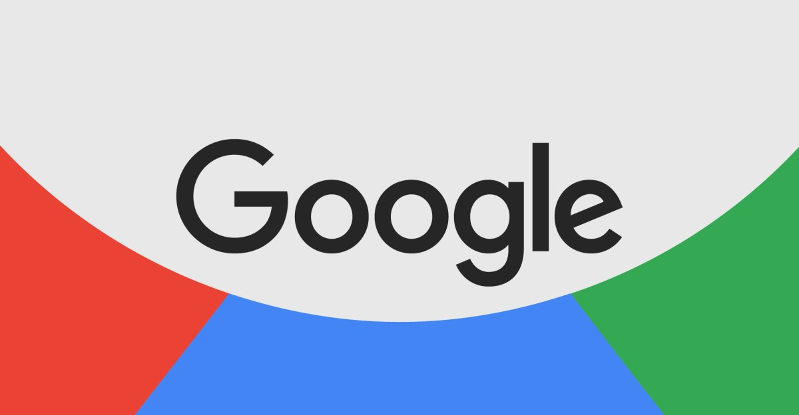

Technology · 24 Oct 2026
Now Google says it might use your Gmail and Google Photos data to target ads

Google has updated its privacy policy in a way that could mean you'll start seeing targeted ads based on your personal data if you're using personalized AI features. The update, spotted by Android Authority, adds an exception to its promise about not using your Drive, Gmail, or Google Photos for per
Multiple independent publishers are reporting on the same development: Now Google says it might use your Gmail and Google Photos data to target ads.
The available reports place the development in the Technology category. The accounts were compared for agreement on the central event rather than simply shared names or broad topics.
One of the available reports describes the development this way: Google has updated its privacy policy in a way that could mean you'll start seeing targeted ads based on your personal data if you're using personalized AI features. The update, spotted by Android Authority, adds an exception to its promise about not using your Drive, Gmail, or Google Photos for personalized ads. While the previous […]
Readers should consult the linked source reports for additional context, updates and details that may change as the story develops.
Sources
This article was produced by the C. O. Eric AI Newsroom from the cited sources. It is published only after automated evidence and safety checks.